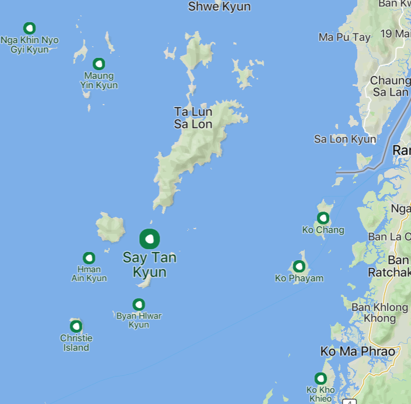
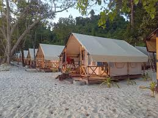
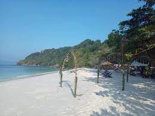
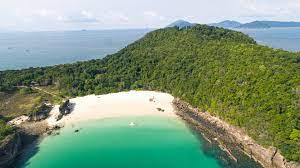
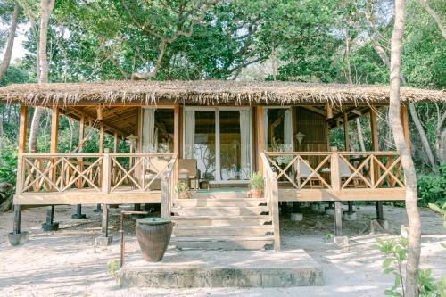

Say Tan Island


Say Tan Island is part of the Mergui Archipelago, located in Kawthaung District, Tanintharyi Region, Myanmar. It is known for its beautiful beaches, clear waters, and excellent opportunities for diving and fishing.

Ideal for Diving & Snorkeling – Say Tan Island is a great spot for underwater exploration, with vibrant coral reefs and rich marine biodiversity.
2. Fishing Opportunities – The island is popular among local and international fishing enthusiasts, offering a chance to catch various fish species.
3. Peaceful Beach Getaway – Say Tan Island is less crowded, making it a perfect spot for travelers looking for a quiet and relaxing escape.
4. Clear Blue Waters & White Sandy Beaches – The island’s coastline is pristine, with clear turquoise water and soft sand.
Gallery


